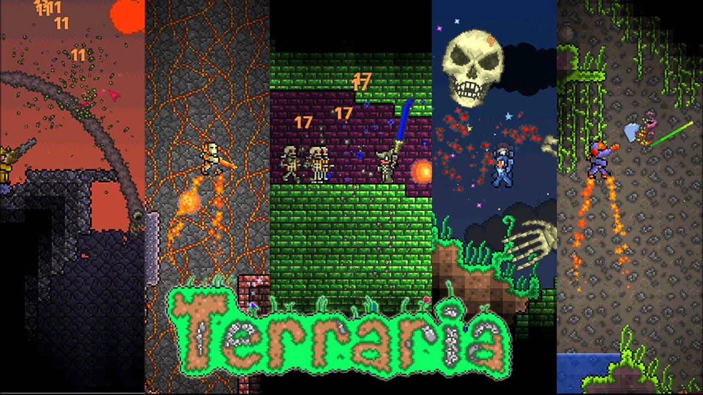

What is Terraria?
Terraria was made by Re-Logic as a 2D sandbox world with features like, adventure, crafting, painting, combat, and very different and difficult bosses. In my experience the game has an amazing amount of content for having a limited size for the worlds. Another amazing feature is the holiday events bringing rare and exclusive materials to a limited world. There has been over 30 million copies sold which is huge for a 2D game.
The Bosses
Terraira has plenty of bosses that have very different fighting styles and looks leading to very exciting gameplay. The thing with these bosses is that most need a item to spawn them to fight and some of these items can be very difficult to get have to explore many biomes and underground biomes while others have specific locations to spawn in. Each to their own have their special drops that help progress in the game by alot.

Levels
- Surface
- Caverns
- Underworld